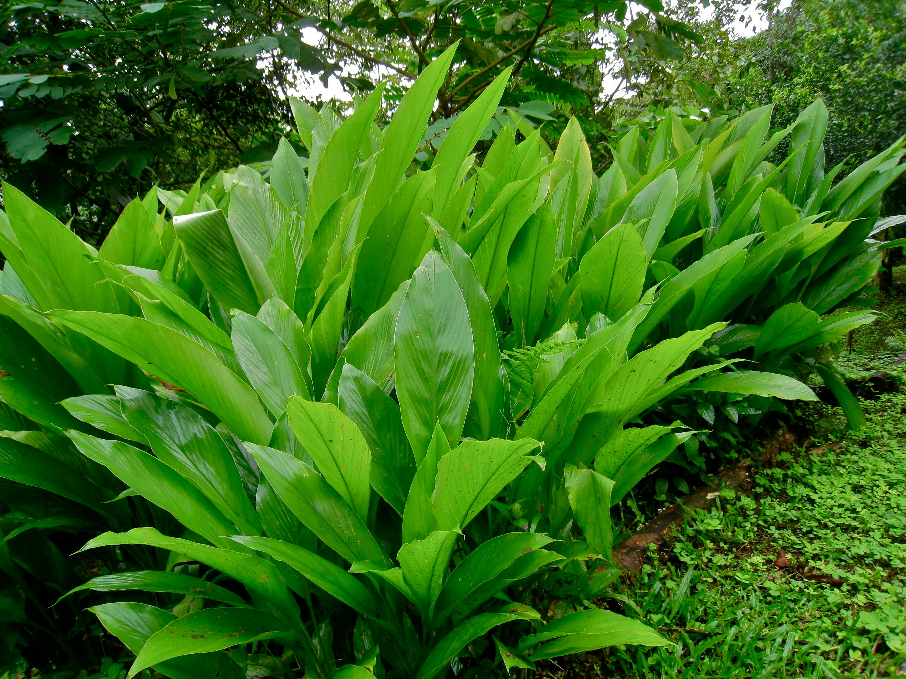

Basonym of Drug
Aamragandhi haridra
Main Synonym
- Sugandha
- Darvibheda
- Padmapatra
- Aamragandha
- Darukarpura
- Surimata
- Surataraka
Regional Name
- Bengali: aam ada
- Gujarati: aambbahaldar
- Hindi: Amiya haldi, amahardi
- Kannada: huli aarsin
- Tamil: pashu manjala
- Telugu: karupususpu
- English: mango ginger
Botanical Name
Curcuma amada Roxb
Family
Zingiberaceae
Classification (Gana)
- Bhavaprakash nighantu: Haritakyadi varga
- Kaiyadeva nighantu: Aushadhi varga
External Morphology
2-3 feet high shrub
Useful Parts
Rhizome
Important Phytoconstituent
- Gum
- Starch
- Volatile oil
- Albuminoids
- Sucrose
- Tannins
Rasa Panchak
- Rasa: Tikta, Kashaya, Madhura
- Guna: Laghu, Ruksha
- Virya: Shita
- Vipaka: Katu
Action
Pittahara
Therapeutic Indication
- Varnya (good for skin)
- Dahaprashaman (useful in burning sensations)
- Raktapittahara (useful in skin and bleeding disorders)
- Kandughna (relieves itching)
- Krumighna (relieves itching)
Therapeutic Uses
- Krumi - rhizome juice of aamragandhi haridra with latakaranja leaves juice is beneficial in worm infestation.
- Kandu - rhizome paste is applied over the skin in itching.
- Sotha - hot fomentation of rhizome paste is applied over the inflammation.
Dose
Powder - 3 to 5 gm, juice - 10-20 ml
Formulations
Not specified
Adverse Effect
Not Known